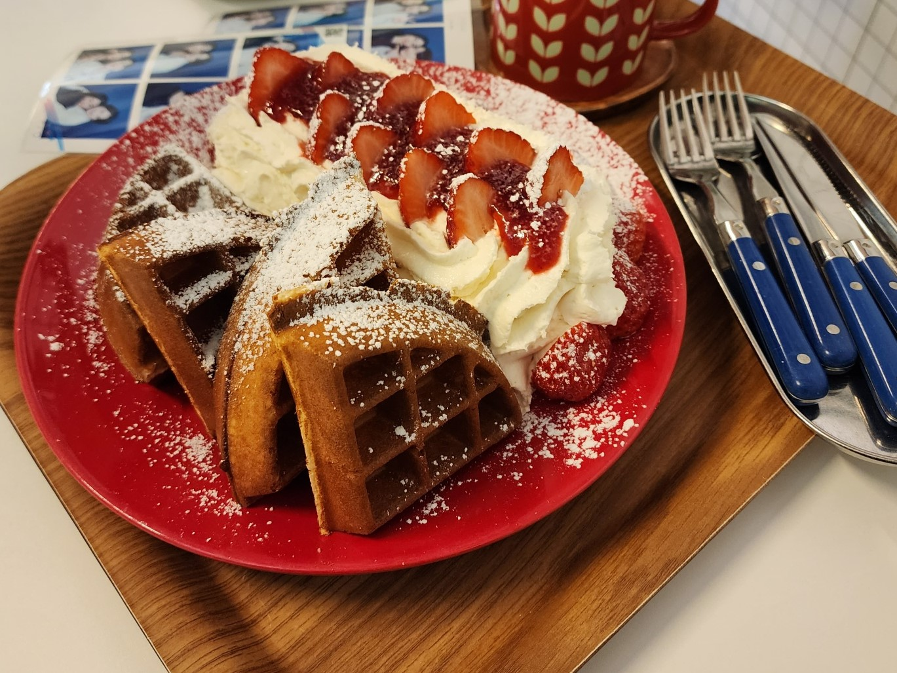
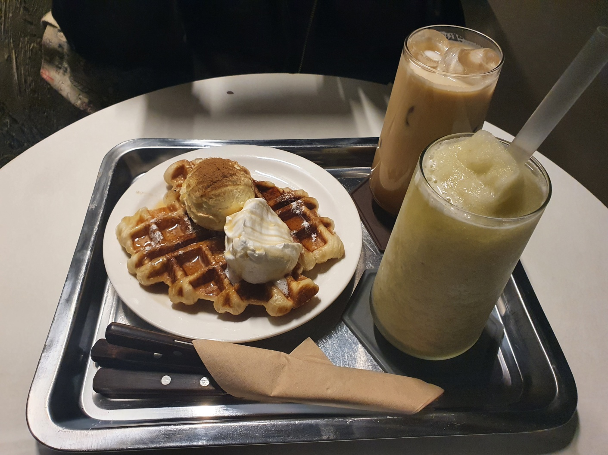
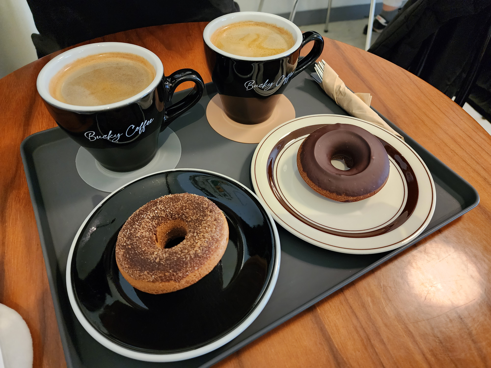

| 1 |
 |
카페 뤽상부르-연신내역 5번 출구에서 367m |
와플과 팬케이크가 맛있는 곳. 넓은 2층짜리 매장과 반려동물도 함께할 수 있는 카페. 2층에서 카공하기도 좋은 카페이다. |
네이버place바로가기 |
| 2 |
 |
823m-연신내역 1번 출구에서 354m |
매장이 지하까지 있는 카페. 아늑하면서 고요하고 마냥 어둡지만은 않은 장소. 반려동물을 동반할 수 있으며 스콘과 커피가 맛있는 곳. |
네이버place바로가기
|
| 3 |
|
설빙-연신내역 5번출구에서 140m |
누구나 다 아는 장소. 그러나 선택지에서 자주 제외되는 장소. 빙수가 맛있고 의외로 사이드로 맛있는 곳. 간단한 수다를 떨며 시간을 보내기 좋은 곳이다. 딸기빙수는 겨울철에만 판매한다. |
네이버place바로가기 |
| 4 |
|
플럽커피-연신내역 5번 출구에서 236m |
아늑하고 따뜻한 분위기의 카페로, 커스커드 밀푀유가 유명하고 맛있는 곳. 밀푀유 디저트를 먹는데 다소 부스러기 때문에 힘들지만 맛있는 것은 분명하다. 제철 음료도 판매한다. |
네이버place바로가기 |
| 5 |
 |
버키커피-연신내역 1번 출구에서 463m |
흔히 카페에서 볼 수 없는 구운 도넛을 맛볼 수 있으며 아인슈페너가 인기메뉴인 곳이다. |
네이버place바로가기 |